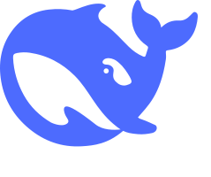

智能中心/智能助手
运
今天哪台服务器资源异常？

DeepSeek · deepseek-chat 会话自动保存今天哪台服务器资源异常？
调用了 2 个工具 查询主机指标 · 查询告警 1.6s
✓
查询主机指标
✓
查询告警
过去 24 小时有 2 台主机出现异常：
web-01 — CPU 持续 95%+（已 3 小时），伴随 2 条告警；建议先检查
db-01 — 内存使用率 88%，呈上升趋势，可能与慢查询堆积有关。
其余主机指标正常。需要我深入排查某一台吗？
web-01 — CPU 持续 95%+（已 3 小时），伴随 2 条告警；建议先检查
top 定位进程。db-01 — 内存使用率 88%，呈上升趋势，可能与慢查询堆积有关。
其余主机指标正常。需要我深入排查某一台吗？
帮我把 web-01 的 nginx 重启一下
需要确认 · 服务重启
即将在主机
web-01 上执行重启操作，期间服务将短暂中断（约 2-5 秒）。
$ systemctl restart nginx
你好，我是运维智能助手
可以查询主机与告警状态、解读巡检报告、协助排查故障；
涉及重启、变更等危险操作会先请你确认。
涉及重启、变更等危险操作会先请你确认。
还没有配置模型
智能助手依赖大模型工作。前往「模型配置」添加一个服务商，
几分钟即可开始使用。
几分钟即可开始使用。
1选择服务商（OpenAI / DeepSeek / 智谱 等）
2填入 API Key，点「测试连接」验证
3保存并设为「当前使用」，回来即可对话